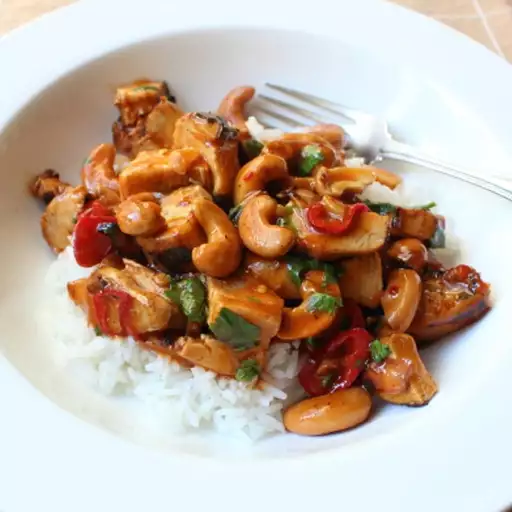

Cashew chicken
Home

Description
This Sukhothai pad thai can be made with shrimp, chicken, or pork instead of tofu. You can also look for items in the Asian foods section at your local grocery store. Adjust the pad thai sauce ingredients to taste.
Ingredients
- 2 grilled skinless, boneless chicken breasts, cut into 1-inch pieces
- 1 pinch salt and ground black pepper to taste
- ½ cup cold water
- 1 tablespoon cornstarch
- 1 lemon, juiced
- 1 ½ tablespoons rice vinegar
- 1 tablespoon ketchup
- 1 tablespoon soy sauce, or more to taste
- 1 tablespoon packed brown sugar
- 2 teaspoons Asian chile pepper sauce (such as sambal oelek)
- 2 tablespoons vegetable oil
- 1 fresh hot red chile pepper, sliced
- 6 thin slices fresh ginger root
- ½ cup dry-roasted cashews
- 2 cloves garlic, sliced
- ¼ cup chopped cilantro
Steps
- Season chicken cubes with salt and black pepper.
- Mix water and cornstarch in a bowl until smooth; whisk in lemon juice, rice vinegar, ketchup, soy sauce, brown sugar, and chile pepper sauce into cornstarch mixture, stirring until brown sugar has dissolved and cornstarch is free of lumps.
- Place a heavy skillet over medium-high heat; pour in vegetable oil. Add slices of red chile and ginger to the hot oil. Cook, stirring often, until oil is flavored, about 2 minutes. Stir in cashews and garlic; cook until cashews are lightly golden brown, about 2 minutes more.
- Lightly toss seasoned chicken cubes with cashew mixture in skillet until combined, about 30 seconds. Turn heat down to medium-low and pour cornstarch mixture into the skillet. Stir constantly until sauce has thickened, about 30 seconds. If too thick, add a splash of water. Simmer 2 more minutes to heat the chicken through.
- Adjust levels of salt, black pepper, soy sauce, and chile pepper sauce to taste. Stir in cilantro just until wilted, about 15 seconds.
Recipe link